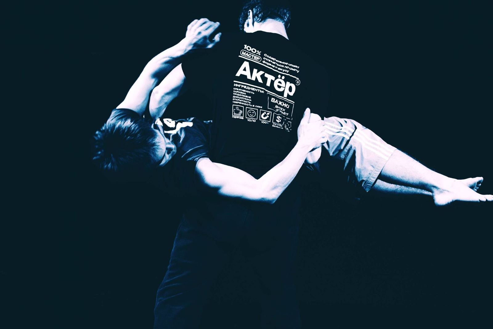
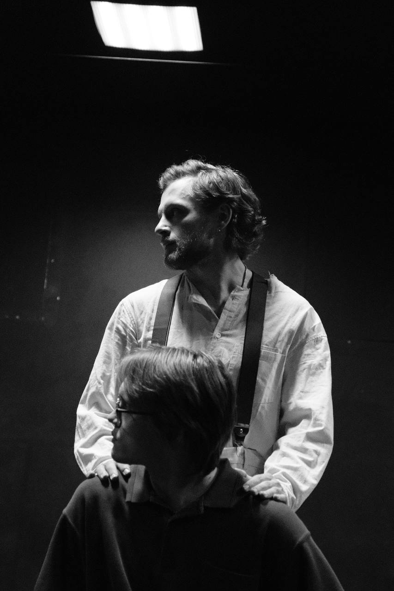
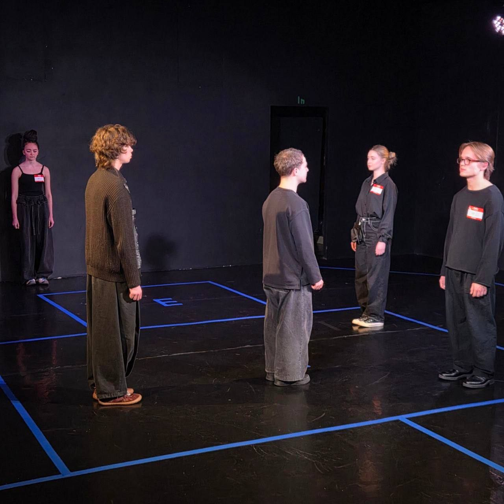

Блоки больше не выплывают при прокрутке. Вместо этого три варианта: можно взять один, несколько или ни одного. Наведи мышку на каждый пример.
Едет сама и останавливается под мышкой. Сейчас она уже стоит на чёрной главной (вариант 1).
Сергею нравится, что текст «загорается» синим под мышкой. Здесь синий не просто включается, а заливает название слева направо.
В покое фото чёрно-белые, под мышкой становятся цветными. Сайт выглядит спокойнее, цвет появляется в ответ на интерес.


